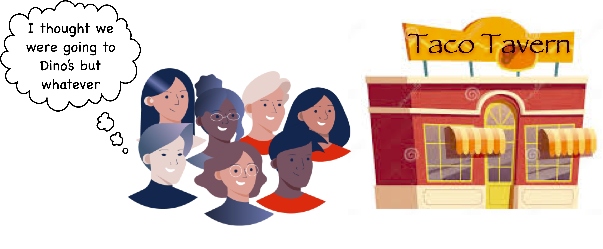

A deliberative poll measures the informed opinion of a group of people who have participated in a discussion about the topic of the poll. This essay introduces a method for integrating deliberative polling into online discussions in social platforms, in order to discover the informed opinion of a group.
Summary
- Discussion is necessary for a group to produce logically consistent, informed judgments.
- But because online discussions are asynchronous, important comments are sometimes overlooked, and not reflected in the group judgment.
- The deliberative poll addresses this by:
- Directing attention to comments that warrant follow-through
- Displaying the deliberative consensus instead of the initial poll results
- This process can be invisibly integrated into social platforms where people vote on and discuss content.
- This method should not only produce better judgments: it is also more fair and democratic.
The Asynchronous Discussion Problem
The Deliberative Poll is inspired by a very important principle: discussion helps groups make better judgments. Discussion is how the knowledge and ideas spread among a diverse group of individuals is aggregated into collective intelligence.
But online discussions are often less effective than in-person conversations. This is because in-person conversations are synchronous – people take turns talking while others listen – whereas online conversations are asynchronous – everyone posts on their own time, and they don’t know if anybody else will read their posts, let alone respond, let alone anytime soon.
As a result, in online conversations important comments sometimes get ignored.
For example, suppose a group of coworkers votes on where to go to lunch. Six people vote for Dino’s, but Alice votes for Taco Tavern and says “Dino’s is closed today.”
In a synchronous, in-person conversation, that comment would settle the matter: everybody who voted for Dino’s would change their vote.

However in an online, asynchronous conversation, this kind of comment is often overlooked, buried in a comment thread that nobody reads.

Even those who do read Alice’s comment will not necessarily react by changing their votes. So the poll results will often be stale, representing initial reactions and not the informed, reasoned consensus of the group.
A Deliberative Poll addresses this issue in two simple ways:
- It directs attention to comments that have been overlooked and that warrant follow-through.
- It displays a poll result that represents the deliberative consensus, not just the initial vote.
Directing Attention
In our example, the system will place a prompt in the feed or the notifications of one or two people who voted for Dino’s, asking, in a manner of speaking, “Hey did you see Alice’s comment? What do you think?”

Like a good facilitator, the system recognizes that Alice’s comment represents a reason not to vote with the majority for Dino’s. It notices that nobody in the majority read her comment, and it reasons that a coherent judgment probably requires that somebody do so, and so it notifies them to make sure they do.
Suppose that two people respond and change their vote to Taco Tavern. Where does the group go to lunch?
The Deliberative Consensus
The Deliberative Poll will display the deliberative consensus next to the overall poll results. In our example, the deliberative consensus will be 3:0 in favor of Taco Tavern (Alice plus the two others who changed their vote) – even though the overall poll results were 4:3 for Dino’s.

This is because there was a unanimous consensus for Taco Tavern among the people who saw Alice’s comment – that is, those who participated in the critical discussion thread and were informed on all the points that were raised.
Suppose the group has adopted a norm of making decisions based on the deliberative consensus. Then they will all happily head over to Taco Tavern at lunch-time. The four who didn’t change their vote may not even know why they are going to Taco Tavern notwithstanding the overall vote – but if they have confidence in the deliberative poll process they will know that there was a reason for the change of plan.

Suppose on the other hand that Bob didn’t trust the result, and really wanted to go to Dino’s. He could have clicked on the thread and read Alice’s comment: his vote would then have been counted in the deliberative consensus. If he agreed with Alice, he might have changed his vote. If he disagreed with Alice, he could have responded with his reason, and the system would have continued the conversation and asked Alice and others who agree with her to respond.
Resolution of Discussions
But the discussion won’t go on for ever; it will end when new arguments are no longer changing the deliberative consensus. This will happen for one of two reasons:
-
People stop arguing. For example, if Dino’s really did re-open yesterday, Alice may just accept the decision to go to Dino’s, and the conversation will end there.
-
The latest argument does not change the deliberative consensus. For example, if Alice responds “But I don’t like Dino’s”, but nobody is convinced by this argument, there is no need for them to respond. As long as members of the pro-Dino’s majority have seen Alice’s argument, but have not changed their minds, the informed opinion is still in favor of Dino’s. Unless somebody comes up with a more convincing argument, the argument is over.
Integration into Social Platforms
The basic process can be applied even outside of formal polls. Many social sites involve voting on posts (via likes or upvotes/downvotes), as well as voting on comments in the threads underneath posts. From this information, a deliberative consensus can be calculated for any post! The system can implement the deliberative poll process by directing attention to critical comments simply by promoting them in the user’s feed or notifications.
Replacing counts of likes or votes with deliberative consensus could help a social platform promote and amplify higher-quality content.
Conclusion
A deliberative poll doesn’t just produce more informed and logically consistent group judgments: it is more essentially democratic than a simple vote based on knee-jerk reactions and first impressions.
Almost everybody has experienced the frustration of dysfunctional online group discussions and decision-making. This is why good facilitators are so essential to well-functioning groups: they help prevent the sense of frustration, arbitrariness and irrationality that comes from logically inconsistent decisions and lack of follow-through on important points that have been raised.
The process is like a cross between a ticket system and a good human facilitator. It has a simple, even-handed idea of what follow-through has to happen to ensure fair and logical results, and it tracks status and gently reminds people to respond until key points have been adequately addressed.
Conversations in deliberative polls can be designed to be essentially indistinguishable from the types of threaded conversations already found on many social sites. But these simple mechanisms result in deeper, more satisfying conversations, and more fair and informed group judgments. Combined with a mechanisms for promoting honesty, this method can be used to amplify the honest and informed opinion in a social platform, in order to help Give Truth the Advantage.